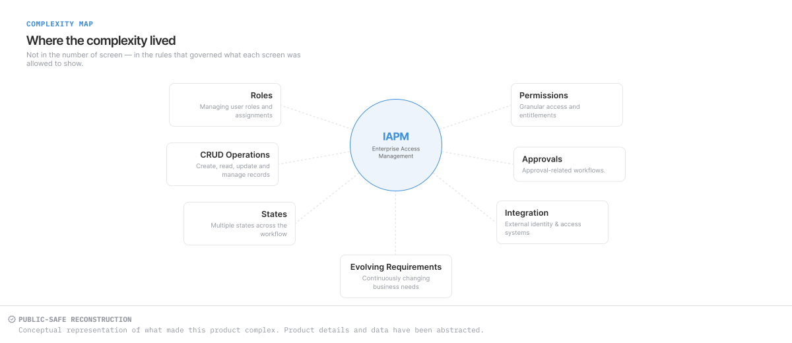
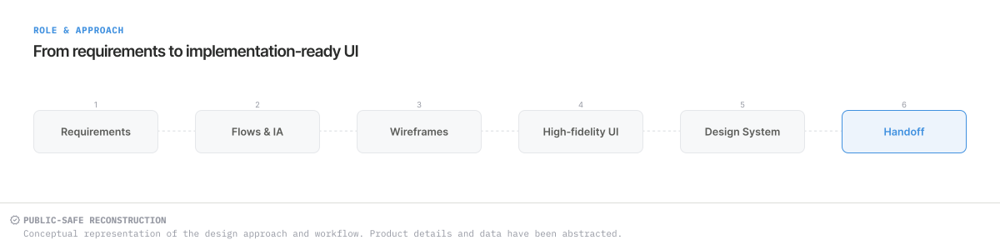
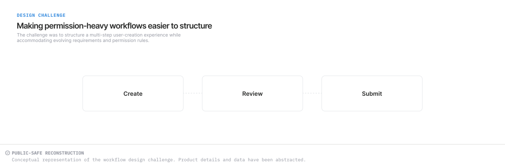

CASE STUDY · ENTERPRISE PRODUCT
IAPM
Redesigning a role-based enterprise access-management product
Some product interfaces and project details cannot be shown publicly. The visuals on this page are public-safe conceptual reconstructions. They explain the design approach without showing proprietary interfaces, product rules or production data.
Making access-related workflows easier to understand.
Roles, permissions, review steps and evolving requirements had to become a clear interface structure while existing business functionality remained intact.
Assigned UX/UI work
Flows, information architecture, wireframes, high-fidelity UI, interaction states and reusable interface elements.
Direction and collaboration
Requirements and some initial guidance came from a business analyst and senior designer; I collaborated within those constraints.
01 · CONTEXT
An existing enterprise product, not a blank canvas.
IAPM was an existing enterprise access-management product. The UX/UI work needed to improve interface structure while preserving its underlying business functionality.
Established requirements provided the starting point. As requirements evolved, including M365-related functionality, the design needed to accommodate additional information and actions without creating an unrelated interaction pattern for each change.
02 · COMPLEXITY
The complexity was in the rules behind the interface.
Roles, permissions, record management and workflow states affected what an interface needed to communicate. The challenge was to make those relationships understandable within the existing product model.


03 · MY ROLE & APPROACH
From requirements to structured, implementation-aware UI.
My contribution covered assigned UX/UI work across flows, information architecture, wireframes, high-fidelity interfaces, interaction states and reusable UI elements.
Requirements and some initial design direction came from the BA and senior designer. I worked within those inputs and the existing product constraints; the sequence below summarises the activities rather than implying sole ownership of every phase.


04 · DESIGN CHALLENGE
Making permission-heavy workflows easier to structure and navigate.
Access-related tasks combined creating or managing records, assigning information and progressing through review. The design problem was to establish a clear sequence while leaving room for changing requirements.


The selected Create User reconstruction makes one part of this challenge visible: a review step with grouped information and separate edit actions before the user continues.
05 · DESIGN DECISIONS
Design decisions made visible in the interface.
The selected reconstruction illustrates four structural choices. These explain the design reasoning; they do not claim measured usability improvements.
Show the current stage
The five-step indicator places Review & Submit after the information-entry stages. It communicates where the user is within the task.
See workflow progression ↓Group related information
User, Access Card, Other Details and Role Details are separated into labelled groups. This gives the review a structure that reflects the information being checked.
See the information groups ↓Keep correction actions local
Edit links sit beside the relevant group headings. Their placement makes the scope of each action explicit; the reconstruction does not show the subsequent edit behaviour.
See edit-action placement ↓Separate backward and forward actions
Back is visually quieter than Continue. This distinguishes returning to an earlier step from advancing. The final submission result is outside this visual.
See action hierarchy ↓06 · DESIGN SYSTEM
Reusable foundations within an existing product.
The project reference describes work with tokens, components and recurring interface patterns. My contribution was to assigned reusable UI elements within the wider team’s design work.
The selected reconstruction shows repeated group containers, headings and edit links. It illustrates visual consistency, but does not document a production component library, token specification or complete set of interaction states.
07 · SELECTED INTERFACE
Create User — Review & Submit.
This public-safe reconstruction focuses on reviewing information across a multi-step task. Product-specific details and data have been abstracted; it is not a production screenshot.

Reading the interface
- Progression: the step indicator identifies Review & Submit as step 05 of 05.
- Grouping: four labelled areas separate identity, card, access and role information.
- Corrections: each group includes an Edit link beside its heading.
- Actions: Back and Continue have different visual emphasis. Although the stage is called Review & Submit, the supplied button says Continue; its exact production behaviour is not established here.
08 · DESIGN TO IMPLEMENTATION
Design work prepared for handoff.
The work included design handoff and collaboration around evolving requirements. This meant considering interface structure and recurring patterns alongside the existing product’s implementation constraints.
Handoff is the confirmed boundary of the contribution described here. The available visuals do not establish which screens shipped, how they were implemented or what outcomes followed.
09 · REFLECTION
What I took from the project
Enterprise UX is often about making rules visible.
Complex permissions and workflows need to become understandable interface structures.
Consistency becomes more important as scope grows.
Reusable patterns reduce the need to solve the same interface problem repeatedly.
Designing within constraints changes the nature of the work.
Redesigning an existing product means improving the experience while respecting established functionality, requirements and implementation realities.